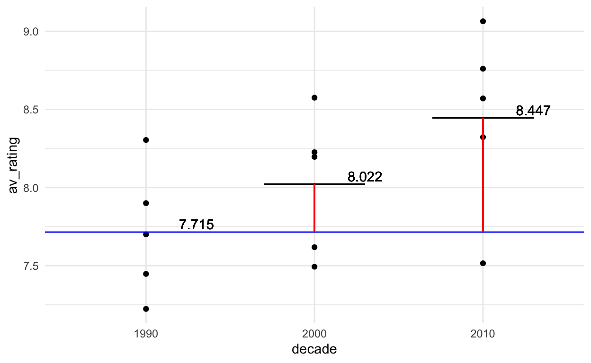
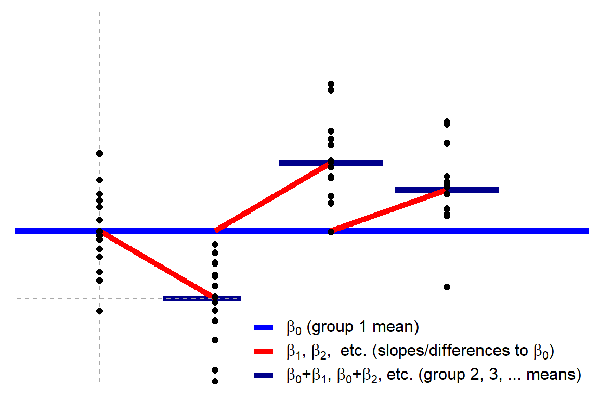

Instructions
To participate in this activity you will need have to two windows readily available to you:
- Your Zoom window
- The Team Up! activity linked from Quercus in a browser window for voting.
I would recommend that one member of the team shares their screen with the rest of the team and shows this activity where you can see the question and options.
Note 1: In the Team Up! activity you will just see the letters for the questions, not the options themselves.
Note 2: There are hints for some questions, but if you get really stuck, please use the ‘Ask for Help’ option in Zoom.
Question 1 to 7 refer to the TV show data discussed.
The data
Golden age of TV?
Let’s look at some data from a 2018 article in the Economist.

# Libraries
library(tidyverse)
library(modelr)
library(lubridate) # to make it easy to work with dates
url <- "https://raw.githubusercontent.com/TheEconomist/graphic-detail-data/master/data/2018-11-24_tv-ratings/IMDb_Economist_tv_ratings.csv"
tv_data <- read_csv(url)
head(tv_data, n = 10)
glimpse(tv_data)Each row (i.e., observation) is an episode of TV show.
Suppose we are interested in investigating decade (decade that the TV show was released) and rating the av_rating (average rating per episode).
Question 1
Assumptions
Carefeully consider the head and glimpse of the data provided in the data section and the plot below.

Suppose you wish to use fit a model to predict average episode rating (av_rating) from date alone. Using just the information you ahve so far, which ONE of the following comments is most appropriate?
A. Linear regression seems appropriate.
B. Linear regression does not seem appropriate due to the independence assumption being violated.
C. Linear regression does not seem appropriate due to the equality of variance assumption being violated.
D. Linear regression does not seem appropriate due to the linearity assumption being violated.
Note: In the following questions we will assume we can proceed with linear regression. This may or may not be correct. I.e. it is not a hint to the answer to this question.
Question 2
t-test
Suppose you talk to a TV critic and they suggest that in industry there is a common belief that the average ‘average’ rating for TV shows in the 2010s was 8.1. (Note the careful language, we are working with data aggregated at the episode level.)
Restrict the data to just the episode from 2010. (If you don’t know how to do this, there is a hint). Run a one sample t-test to test the claim from the TV critic.
Which of the following is the best conclusion based on the result of your t-test?
A. We have no evidence against the claim that the average, average rating is 8.1.
B. We have some evidence against the claim that that the average, average rating is 8.1.
C. We have very strong evidence against the claim that the average, average rating is 8.1.
D. The t.test functions produces an error due to a violation of Normality assumption.
Question 3
Toy data
Let’s take a moment to do something very simple. I have pulled five observations from each decade to plot

How do we make sense of this with linear regression?
Let’s fit a line to each group seperately.
## mu1990 mu2000 mu2010
## 7.71498 8.02172 8.44652Hopefully you agree that the intercept of each of these ‘intercept only’ models are the means of each group.

Now suppose I claim that we can desribe all 15 points with this equation:
\[y_i = d_{1}\mu_{1990} + d_{2}\mu_{2000} + d_{3}\mu_{2010} + \epsilon_i\]
Where \(\epsilon_i \sim \text{N}(0, \sigma)\).
Which ONE of the following would have to be true for this to be true?
A. \(d_1\) would be a column of FIFTEEN 1s and then \(d_2\) and \(d_3\) would be columns of 0s and 1s, and take th value 1 when the observation is from 2000 and 2010 respectively.
B. There are infinite possible combinations of three \(d\) vectors for which this would be true, so as long as it is any one of those, this will be true.
C. Each \(d\) would have to be a vector of FIVE 0s and 1s, and take the value 1 when the observation is the decade indicaated by the \(\mu_{year}\) it is multiplied by.
D. Each \(d\) would have to be a vector of FIFTEEN 0s and 1s, and take the value 1 when the observation is that decade.
Question 3
Which ONE of these equations is equivalent to \(y_i = d_{1990}\mu_1 +d_{2000}\mu_2 + d_{2010}\mu_3 + \epsilon_i\)?
A. \(y_i = \mu_1 + d_{2000}(\mu_2-\mu_1) + d_{2010}(\mu_3-\mu_1) + \epsilon_i\)
B. \(y_i = \mu_1 + d_{2000}(\mu_2-\mu_1-\mu_3) + d_{2010}(\mu_3-\mu_1-\mu_2) + \epsilon_i\)
C. \(y_i = (\mu_1 + \mu_2 + \mu_3)*(-d_{1990} - d_{2000} - d_{2010})\)
D. \(y_i = d_{1990}(\mu_1-\mu_3) + d_{2000}(\mu_2-\mu_1) + d_{2010}(\mu_3-\mu_1) + \epsilon_i\)"

Interpretting a linear model

Question 4
One-way ANOVA as regression
Model: One mean for each group predicts \(y\).
\[y = \beta_0 + \beta_1x_1 + \beta_2x_2 + \beta_3x_3+\ldots\ H_0:\beta_0=y\]
where xi are indicators (\(x=0\) or \(x=1\)) where at most one xi=1 while all others are \(x_i=0\).
Notice how this is just ’’more of the same" of what we saw iwth the t-test. When there are only two groups, this model is \(y=\beta_9 + \beta_1x_1\), the independent t-test. If there is only one group? \(y=\beta_0\), the one-sample t-test. I hope this is easier to see from the visualization.

Question 8
Which ONE of these models is NOT linear?
A. \(Y = \beta_0 + \beta_1X_1 + \beta_2X_3^2\)
B. \(Y = \beta_0 + \beta_1X_1 + \beta_2X_2X_3\)
C. \(Y = \beta_0 + \beta_1X_1 + X_3^{\beta_2}\)
D. \(Y = \beta_0 + \beta_1X_1 + \beta_2X_2 + \beta_3cos(X_3)\)
Question 9
LaTeX is a document preparation system that allows us to type set mathematic symbols well. In R Markdown, which we will use for assessments in this course (more on that next week for those who are unfamiliar), we can use LaTeX syntax to write equations and mathematical symbols. Single dollar sign pairs $ create inline expressions and double dollar sign pairs ($$) will show the express in dispaly mode.
Inline: \(\pi^2\)
Display: \[\pi^2\]
- Greek letters can be diplayed with a back slash before their name, e.g.,
$\eta$-> \(\eta\). - Superscripts:
$a^b$-> \(a^b\), or$a^{2b}$-> \(a^{2b}\). - Subscripts:
$a_b$-> \(a_b\), or$a_{2b}$-> \(a_{2b}\).
Which of the following lines of LaTeX would create the equation below (if correctly put in dollar signs $)?
\[y_i = \beta_0 + \beta_1x_{1i} + \epsilon_i\]
A. yi = \beta0 + \beta1x{1i} + \epsilon i
B. y_i = \beta_0 + \beta_1x_1i + \epsilon_i
C. y_i = \b_0 + \b_0\ex_1i + \error_i
D. y_i = \beta_0 + \beta_1x_{1i} + \epsilon_i
Question 10
One of the important administrative Forms for this course has an emoji hiding in it. Check each of the forms and select which ONE of the following emoji it is.
A. üöØ
B. üî§
C. üöù
D. üïß
Note: These are all examples of unpopular (i.e. not commonly used) emoji based on http://emojitracker.com/. Photosensitivity warning for flashing as the site updates realtime.